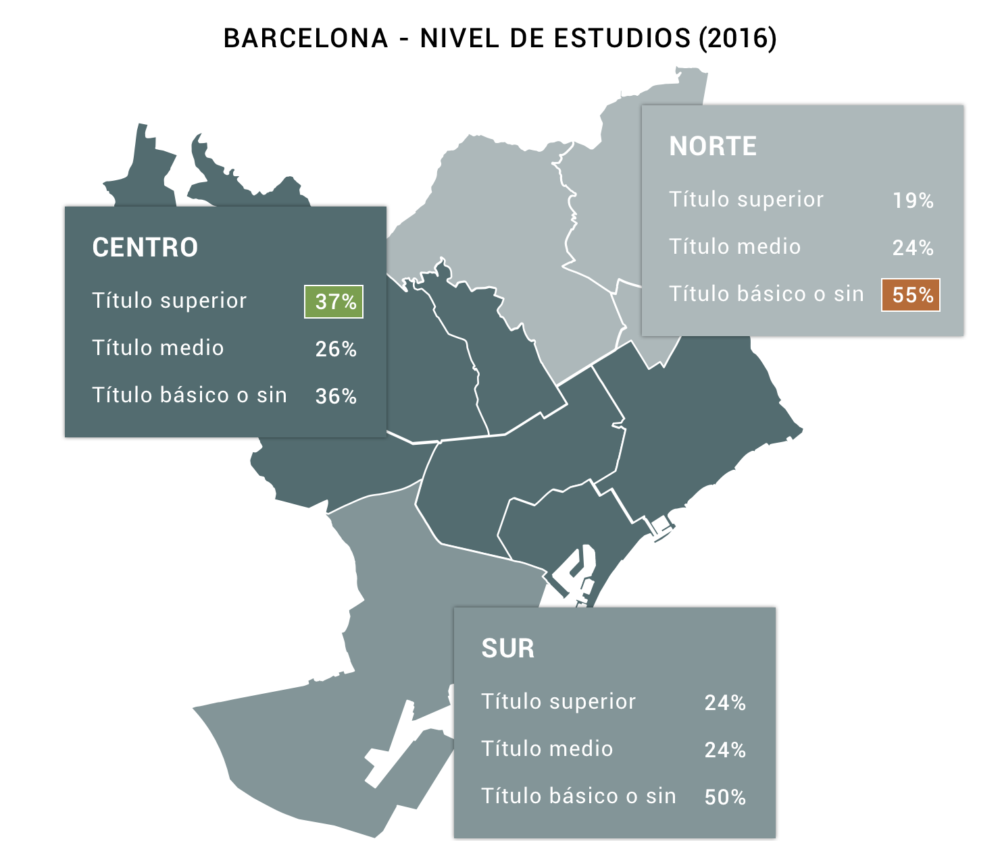
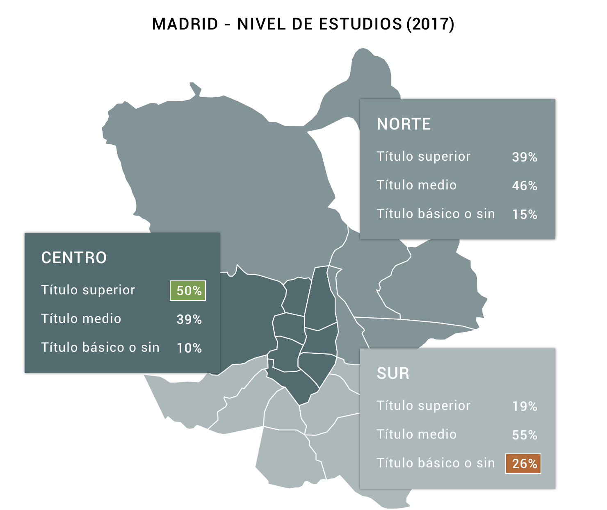
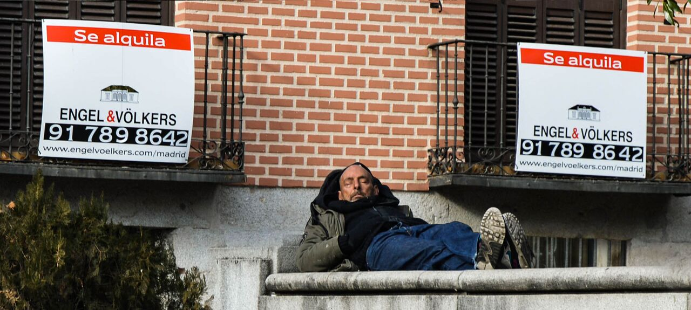

La variable "Título Superior" engloba Diplomado universitario, Arquitecto o Ingeniero técnico, Licenciado universitario, Titulado en estudios superiores no universitario y Doctorado o Estudios de postgrado. Fuente: Ajuntament de Barcelona
1 | La situación
Paloma Díaz es la dueña de un piso en el barrio de Prosperidad, en Madrid. Les ha pedido a sus inquilinos que se marchen antes de que acabe el contrato y ellos han aceptado, pero tienen un problema: ahora pagan 650 euros mensuales, y, en el barrio, ya no encuentran viviendas por ese precio. “Han subido a 800 su tope máximo mensual, pero conciertan visitas y los pisos vuelan, creo que hay mucha demanda y poca oferta”, explica Paloma.
No es esta una historia de grupos financieros ni de grandes inmobiliarias que presionan para vender un edificio. La de Paloma y la pareja que alquila su casa es una cadena de inercias entre particulares con algunos eslabones que se rompieron cuando nadie lo esperaba. Paloma compró el piso antes de la crisis, en un momento en el que ser propietario de una vivienda era un paso natural: “Era incluso una cultura impulsada por los padres. Te comprabas una casa y mirabas también un coche en cuanto podías", recuerda. Después tuvo dos hijas, la vivienda se le quedó pequeña y a la vez llegó la crisis.
Paloma Díaz
"Echo a mis inquilinos de casa y les obligo a salir a un mercado peor del que ellos abandonan"
Con la explosión de la burbuja inmobiliaria, el precio del piso de Paloma cayó tanto que venderlo significaba ingresar menos millones de los que debía de hipoteca. Por eso lo puso en alquiler y se mudó como inquilina a una casa más grande, aunque el plan dejó de funcionar al cabo del tiempo: “La letra que pagaba por mi piso en propiedad me ha hecho acumular pérdidas durante tres años porque el alquiler que cobraba por él era más bajo. Ahora quiero vender el piso por la cantidad que me queda por pagar”.
Según el portal inmobiliario Idealista, el precio de la vivienda en alquiler en España subió el año pasado un 15,9%. Barcelona y Madrid son las ciudades con los precios más altos. En el primer trimestre de 2017 el metro cuadrado en estas dos ciudades se pagaba a 18,1 y 14,8 euros, respectivamente, lo que ha generado unas consecuencias que Paloma resume bien: “Echo a mis inquilinos de casa y les obligo a salir a un mercado peor del que ellos abandonan”.
Ellos tienen problemas pero tú, ¿encontrarías piso donde quieres con el sueldo que cobras? Ten en cuenta que es recomendable no destinar más de un tercio de tu sueldo a la vivienda.
Porcentaje de sueldo dedicado al alquiler:
- 30%
31-35%
36-40%
41-45%
46-50%
+ 50%
Fuente de datos: Idealista
“El alquiler es hoy objeto de titulares en todos los medios”. Quien habla es Fernando Encinar, jefe de Estudios de Idealista. “Viendo hoy los datos de nuestro informe, es obvio observar que el alquiler ha experimentado un fuerte incremento de precio en el último año”. Joan Rafols, presidente de la Comisión de Economía Territorial y Urbana del Colegio de Economistas de Cataluña, se apoya en los datos del Instituto Catalán del Suelo (INCASOL) para analizar la evolución de los alquileres. “Entre 2012 y 2013 los precios bajaron un 20% y en 2016 subieron hasta igualar los que se manejaban en 2007”. Ambos expertos coinciden al señalar que seguirán aumentando si la demanda también lo hace, y Rafols añade después un problema extra en el caso catalán: “En Barcelona no hay mucho más suelo urbanizable para construir”.

Madrid
El distrito con el alquiler medio más alto es el Centro (18,6 euros/m²), seguido de Salamanca (17,3 euros/m²). Por el contrario, Villaverde (9,5 euros/m²) y Vicálvaro (9,2 euros/m²) son las zonas con rentas más asequibles.
Barcelona
Ciutat Vella (20,6 euros/m²) y el Eixample (18,9 euros/m²) se erigen como los distritos con el alquiler más caro frente a Nou Barris (11,9 euros/m²) y Horta Guinardó (12,6 euros/m²), que son las zonas más baratas.
Cómo el alquiler afecta a lo cotidiano
Mientras los alquileres aumentan trimestre a trimestre, no ocurre lo mismo con los salarios. Los últimos datos del Instituto Nacional de Estadística (INE) indican que el sueldo medio en España era de 23.106 euros brutos anuales en el año 2015, aunque la nómina más frecuente —que en estadística se conoce como dato modal— fue de 16.500 euros brutos. Con este valor, el mapa de alquiler en Madrid y Barcelona se tiñe de rojo a no ser que se opte por compartir vivienda.
Isabel Cano
"Acceder a un alquiler en Madrid es muy difícil a no ser que optes por compartir en viviendas en malas condiciones"
Con su salario, compartir piso es la única opción que tiene Joana Rosa, de 34 años, una fotógrafa autónoma que trabaja en el Museo Nacional de Arte de Cataluña y que vive en el barrio barcelonés de Gràcia. Le gustaría vivir sola, pero no encuentra nada a un precio aceptable, pues los 450 euros que gasta son un poco menos de la mitad de lo que gana mensualmente. Lo mismo le ocurre a Isabel Cano, diseñadora gráfica de 26 años residente en Madrid. Tiene un contrato en prácticas de media jornada y un salario de 500 euros mensuales. “Acceder a un alquiler en Madrid es muy difícil a no ser que optes por compartir con varias personas en viviendas en malas condiciones. Es complicado finalizar los estudios y arrancar con la vida profesional si los salarios están como están”.
El nivel de formación de una persona puede ser una pista para saber dónde estará su casa. Si Madrid y Barcelona se dividen en tres grandes áreas (precios altos, bajos y medios), las más caras presentan porcentajes de población más formada. Así, el conjunto de los distritos de toda la zona centro de la capital catalana (Les Corts, Sarrià-Sant Gervasi, Gràcia, Eixample, Ciutat Vella y Sant Martí) cuenta con un 36% de residentes con titulación universitaria, cifra que nada tienen que ver con la realidad de la zona norte (Nou Barris, Sant Andreu y Horta Guinardó), más económica y donde solo hay un 19% de titulados universitarios.

Madrid sigue un patrón parecido. La zona central, más cara, tiene un 50% de perfiles universitarios. El sur, su opuesto, solo un 19%. Si se amplía el foco, aparecen datos interesantes. Los ocho distritos centrales (de un total de 21) reúnen por sí solos a la mitad de los vecinos con estudios superiores de toda la ciudad. Los nueve con precios más bajos, casi dos tercios del total de madrileños sin estudios, que no han acabado la Educación Primaria Básica o que son analfabetos.

Fuente: Ayuntamiento de Madrid. Datos de enero de 2017
La imposibilidad de pagar un alquiler en ciertas zonas expulsa hacia la periferia a personas con menor poder adquisitivo. Esta circunstancia empieza a conocerse como proceso de gentrificación, aunque el geógrafo especializado en estudios urbanos Oriol Nel·lo propone el término aburguesamiento o elitización como posibles traducciones, pues quienes llenan los huecos son personas más acomodadas que las que se marchan. En su artículo ¿Quién teme a la gentrificación? menciona los precios como un filtro que condiciona el lugar donde pueden vivir las familias. “El fenómeno tiende a hacerse general: empresas, fondos de inversión y particulares parecen haberse hecho conscientes de las ganancias potenciales que pueden derivarse de los incrementos de la renta urbana derivada de este fenómeno”.
Oriol Nel·lo
“Empresas, fondos de inversión y particulares se han hecho conscientes de las ganancias potenciales que pueden derivarse de la gentrificación”
Paloma, la propietaria que necesita que sus inquilinos encuentren una nueva casa, lo sabe: “Todo esto repercute en el abandono de la ciudad. Uno deja su piso de alquiler en un barrio concreto y por el mismo dinero que pagaba ya no puede vivir en él. O bajas los estándares, es decir, menos luz y peores condiciones del piso, o te vas fuera de la zona”.
¡Haz la prueba! Mete tu sueldo, el precio que pagas por tu piso y observa cuánto te queda para los gastos cotidianos.

€
Alimentación
%

€
Ropa y calzado
%

€
Transporte
%

€
Salud
%

€
Gastos hogar
%

€
Enseñanza
%

€
Telecomunicaciones
%

€
Ahorros
%

€
Bares y restaurantes
%

€
Ocio y cultura
%

€
Alcohol y tabaco
%

€
Otros
%
La clasificación de gastos utilizada es de la COIOP (Eustat), a la cual hemos añadido un porcentaje de ahorros deducido a partir de la media nacional. Los porcentajes dedicados a cada gasto provienen de la encuesta de presupuestos familiares realizada por el INE.

© Javier H.
2 | La razón
“Por fin nos hemos deshecho de todos los mantras que rigieron el mercado durante décadas, como el tan cacareado 'alquilar es tirar el dinero”, considera Fernando Encinar. Él señala dos perfiles nuevos de inquilino: por un lado están las personas que se han visto obligadas a acudir al mercado del alquiler por no poder hacer frente a una compra. “Muchos quizá podrían permitirse el pago de una cuota hipotecaria, pero no tienen los ahorros necesarios para pagar la entrada, que suele rondar el 30% del valor del piso”. En otro grupo están las personas que eligen voluntariamente vivir de alquiler para evitar los sacrificios y riesgos asociados a firmar una hipoteca a largo plazo.
Este cambio en las preferencias ha hecho que la oferta de alquiler no haya crecido a la par que la demanda y eso favorece la subida de los precios, que llevaban diez años hibernando. El concejal de Vivienda del Ayuntamiento de Barcelona, Josep Maria Montaner, apunta a más causas que explican que el parque de alquiler sea escaso: la demanda de pisos ha crecido por la necesidad interna de la ciudad, por la vivienda temporal turística y por todo un sector compuesto por estudiantes, investigadores o técnicos, gente que trabaja para multinacionales o laboratorios durante una época acotada y que tienen más recursos económicos para alquilar que la gente de los barrios.
Jaime Palomera, portavoz del Sindicat de Llogaters [inquilinos] de Barcelona, señala cuatro responsables de la subida de precios: la banca, que mantiene miles de pisos vacíos a la espera de que suba su precio en el mercado; los fondos de inversión extranjeros, que han visto en la compra de edificios enteros para alquilar un negocio muy lucrativo; las agencias inmobiliarias, interesadas en fomentar los precios altos para aumentar su porcentaje de comisión y, por último, la propia legislación. En 2013 se aprobó la Ley de Arrendamientos Urbanos y debilitó mucho los derechos de los inquilinos, por ejemplo, con la reducción de los contratos de 5 a 3 años.
En medio de esta batería de causas aparece el fenómeno de los pisos turísticos con la plataforma Airbnb a la cabeza, que nació en 2012 y que hoy acapara muchos titulares.
Los pisos turísticos
“No vendas, empiezas a recuperar ahora”, le dice la gente a Paloma cuando explica que necesita que la pareja que vive en su antiguo piso se marche. “Pero yo no tengo mentalidad inversora y quiero vender. Tengo una amiga que ha puesto en Airbnb el primer piso que compró y está contenta, pero yo no quiero más trabajos con la vivienda, bastantes cosas tengo de las que ocuparme”.
Para Joana Rosa, la fotógrafa de Barcelona, Airbnb fue una solución hace unos años, cuando alquilaba por días la habitación más pequeña de su piso como ayuda para pagar su propia mensualidad al casero. “He dejado de hacerlo cuando empecé a trabajar en horario fijo porque ya no tengo tiempo para recibir a los turistas, limpiar la habitación y hacer las gestiones”.
Frente a la incomodidad de atender las entradas y salidas de viajeros itinerantes, la ventaja de meterse en un negocio rentable que ya ha saltado de los particulares a las empresas. Hoy, muchas se dedican a comprar edificios enteros para destinarlos al alquiler turístico, lo que rompe con el espíritu “colaborativo” de la plataforma y, además, disminuye las opciones para los vecinos de la ciudad que buscan un alquiler clásico. En medio del apogeo, una pregunta: ¿es determinante el efecto que causa esta tendencia?
Josep Maria Montaner
"Los apartamentos turísticos tienen cierto efecto en el mercado pero juegan en otra liga"
Barcelona se perfila como la ciudad más afectada de España y Montaner pone el asunto en contexto: “Los apartamentos turísticos tienen cierto efecto, pues ha disminuido la oferta de viviendas en alquiler, pero juegan en otra liga. Está claro que el propietario que alquila su piso a los turistas tienen unas ganancias del 15% o 20%. Frente a eso, quien lo hace al modo normal tiene unos réditos del 5 o 6%, pero insisto en que tiene una influencia menor en el parque de vivienda”.
El economista Joan Rafols considera que la necesidad de regular los apartamentos turísticos tiene más bien un fuerte componente fiscal y señala la necesidad de que Hacienda controle unos ingresos que dan mucha rentabilidad, “dos o tres veces más que si se dedica a la una renta permanente y que se le oculta al fisco”.
La suma de los apartamentos turísticos, la gentrificación y los precios altos (y en aumento) dan una realidad: los centros de Barcelona y Madrid se vacían. En la década comprendida entre 2006 y 2016, el número de residentes empadronados ha caído en más de 18.000 personas en la Ciudad Condal, 17.000 en la capital española.

Fuente de datos: Ajuntament de Barcelona y Ayuntamiento de Madrid

3 | La solución
Las administraciones públicas y los expertos del sector están de acuerdo en que hay que tomar medidas para estabilizar el mercado del alquiler y facilitar el acceso a colectivos con menos poder adquisitivo. La prueba es que comunidades autónomas como Andalucía, Cataluña o Valencia están desarrollando una normativa específica para penalizar a aquellos grandes propietarios de vivienda vacía. También se quiere apostar por la construcción de promociones públicas en alquiler, una medida con la que es posible regular los precios si el número de viviendas que controla un ayuntamiento es elevado, algo que va en la línea de lo que están haciendo otras ciudades europeas.
La situación en otras ciudades
LONDRES
Es una de las ciudades con las rentas más caras de Europa. El Ayuntamiento aprobó el año pasado el programa Homes for Londoners 2016-2021, que prevé la construcción de unas 90.000 viviendas en renta asequible hasta 2021. Para ello, destinará 3.000 millones de libras. Además, ha creado un programa específico en el que el Ayuntamiento ejercerá de intermediario entre inquilinos y propietarios de forma que estos obtendrán ventajas a cambio de fijar rentas por debajo del mercado.
COPENHAGUE
Una de las urbes más caras, pero con varios planes de ayuda al alquiler que facilitan el acceso a la vivienda a distintos grupos de población: desde jóvenes y estudiantes, hasta desempleados, familias monoparentales o tercera edad. Según la circunstancia en la que se encuentren, las ayudas que concede el Ayuntamiento de Copenhague van desde los 660 euros hasta los 2.000 euros si tienes a tu cargo uno o más dependientes.
BERLIN
En 2015, Berlín fue la primera ciudad alemana en aplicar la Ley Federal que limita la subida de los precios del alquiler. La medida establece que la renta de los nuevos arrendamientos no podrá subir más de un 10% con respecto a los de la zona. Quedan fuera de esta norma los pisos de nueva construcción puestos en alquiler por primera vez después del 1 de octubre de 2014 y aquellos que hayan sido rehabilitados. Además de esto, en la ciudad se está construyendo un amplio parque de viviendas en alquiler moderado que se inició en 2015.
PARIS
La ley Alur, aprobada también en 2015, contempla la limitación de las rentas mensuales de los alquileres en París. La nueva norma, entre otras disposiciones, tiene por objeto frenar el continuo ascenso de los precios de los arrendamiento en la ciudad.
El Observatorio Parisino de Rentas ha establecido unos valores de referencia para los 80 distritos de París durante 2015. Este medidor fija unas cuotas que oscilan entre los 22€/m² para los más asequibles y 31 euros/m² en los casos más cotizados. Así, se establece que el casero no pueda estipular una renta que supere en un 20% a la renta de referencia para su inmueble.
Los iconos de las ciudades han sido realizados por ProSymbols de The Noun Project y adaptados por el equipo para el proyecto.
Iniciativas públicas en Madrid y Barcelona
En la capital
Favorecer un mercado en alquiler es el objetivo que se ha marcado la Empresa Municipal de la Vivienda y Suelo (EMVS) a través de Alquila Madrid, un programa que relanzó hace unos meses para mejorar el servicio que presta el organismo y que, según el consejero delegado del organismo, Francisco López Baquero, “se había deteriorado en cuanto a objetivos reales”.
La medida más destacada del programa no solo es el papel de la EMVS como intermediario entre propietario e inquilino, sino también la asunción de unos importantes costes —seguro de impago, seguro de hogar y certificado energético— para conseguir que el arrendador reduzca entre un 15 y un 20% el precio del alquiler. Es la forma que tiene el Consistorio de contener las rentas: conseguir que los precios negociados a través de la EMVS acaben siendo la referencia de mercado de alquiler de Madrid. En paralelo, el Ayuntamiento ha anunciado que invertirá 128,5 millones en la construcción de 4.000 viviendas públicas destinadas al alquiler hasta el final de legislatura.
En la Ciudad Condal
El Ayuntamiento de Barcelona también está desarrollando políticas similares. El programa Tu tens la clau busca propietarios dispuestos a reducir el precio de alquiler de sus viviendas. A cambio, el Consistorio les ofrece un seguro por desperfectos o impago y la posibilidad de recuperar hasta 20.000 euros si se han invertido en rehabilitar el inmueble. Ampliar el parque de vivienda pública, localizar las casas vacías y elaborar un baremo de precios aceptado tanto por la ciudadanía como por el sector inmobiliario son otras de las medidas que han prometido desarrollar en la legislatura. En esta línea, la Agencia de la Vivienda de la Generalitat de Cataluña acaba de publicar un índice de referencia de precios de alquiler que se puede consultar aquí.
En el plano estatal, el Ministerio de Fomento ha presentado el borrador del Plan de Vivienda 2018-2021, que prevé ayudas para el alquiler, tanto para jóvenes como para colectivos vulnerables. El texto aún sufrirá varias modificaciones hasta que se presente en el Congreso y tendrá que ser aprobado en la Cámara Baja y ratificado en el Senado.
Josep Maria Montaner es crítico con la batería de medidas estatales. “Ahora los bancos están empezando otra vez a conceder hipotecas y parece que nadie ha aprendido de la situación anterior. Me da la impresión de que al Gobierno y al sector financiero les interesa que se repita otra vez lo mismo. Las medidas que se acaban de presentar animan a que los jóvenes compren vivienda y a nosotros nos parece una opción errónea porque no implica aprender”.
Joan Rafols también tiene dudas sobre el cambio de modelo. Ante la pregunta de si estamos ante un cambio de mentalidad en cuestiones inmobiliarias, responde que es difícil de saber: “Creo que los que alquilan ahora es porque no pueden comprar”.
¿Estamos, entonces, ante una burbuja inmobiliaria? En el sector hay división de opiniones. Para Rafols, sólo se puede hablar de burbuja cuando hay un incremento en la cantidad del producto y del precio. En su opinión, “es algo que no está ocurriendo en estos momentos. Lo que hay es muy poco producto destinado al alquiler y mucha demanda”.
Sin embargo, desde el Ayuntamiento de Barcelona y el Sindicat de Llogaters no opinan lo mismo. El Consistorio considera que los precios “están muy por encima de los recursos económicos de los ciudadanos”, de ahí que se pueda calificar la actual situación de burbuja del alquiler. El Sindicat de Llogaters es más contundente: “Este incremento no responde a renovaciones ni a mejoras en los inmuebles, sino a especulación pura”.
Semanas después de la primera entrevista, Paloma Díaz cuenta que la pareja de inquilinos ya se han marchado de su piso. Al final, ha optado por volver a alquilarlo por más dinero y con una cláusula extra en el contrato que le permite ponerlo en venta con un preaviso de dos meses. “Soy el ejemplo de la especulación pura”, lamenta, pero a la vez está aliviada por dejar de perder dinero. Dar el paso de subir la renta le ha dado algún quebradero de cabeza, pero en la práctica no ha sido tan difícil: “Puse el piso en el mercado y al día siguiente ya tenía nuevos inquilinos”.